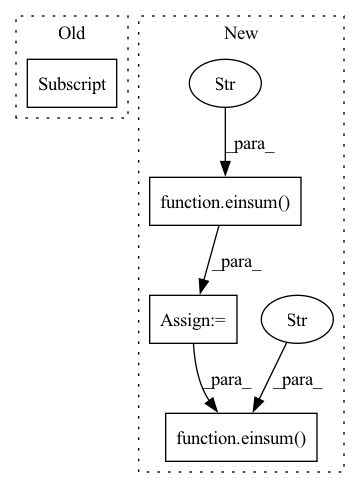

Pattern ID :21683
Before Change
def forward(self, x):
B, N, C = x.shape
qkv = self.qkv(x).reshape(B, N, 3, self.num_heads, C // self.num_heads).permute(2, 0, 3, 1, 4)
q, k, v = qkv[0], qkv[1], qkv[2]
attn = (q @ k.transpose(-2, -1)) * self.scale
attn = attn.softmax(dim=-1)
attn = self.attn_drop(attn)After Change
q = q * self.scale
attn = einsum("b h i d, b h j d -> b h i j" , q, k)
attn = attn.softmax(dim=-1)
attn = self.attn_drop(attn)
x = einsum("b h i j, b h j d -> b h i d" , attn, v)
x = rearrange(x, "b h n d -> b n (h d)")
return self.proj_drop(self.proj(x))
In pattern: SUPERPATTERN
Frequency: 3
Non-data size: 4
Instances Fragment ID: 69271376
Project Name: lucidrains/vit-pytorch
Commit Name: cb6d749821bbf3b0bd17c9e8e64eb343f40b3f69
Time: 2022-10-29
Author: lucidrains@gmail.com
File Name: vit_pytorch/cct.py
M Class Name: Attention
N Class Name: Attention
M Method Name: forward(2)
N Method Name: forward(2)
M Parent Class: nn.Module
N Parent Class: nn.Module
M File Name: vit_pytorch/cct.py
N File Name: vit_pytorch/cct.py
M Start Line: 80
M End Line: 90
N Start Line: 99
N End Line: 111
Before Change
embed_normalized = (embed_sum / bins.unsqueeze(0)).t()
embed_normalized = l2norm(embed_normalized)
embed_normalized = torch.where(zero_mask[..., None] , embed,
embed_normalized)
ema_inplace(self.embed, embed_normalized, self.decay)
self.expire_codes_(x)After Change
embed = self.embed if not self.learnable_codebook else self.embed.detach()
embed = l2norm(embed)
dist = einsum("h n d, h c d -> h n c" , flatten, embed)
embed_ind = gumbel_sample(dist, dim = -1, temperature = self.sample_codebook_temp)
embed_onehot = F.one_hot(embed_ind, self.codebook_size).type(dtype)
embed_ind = embed_ind.view(*shape[:-1])
quantize = batched_embedding(embed_ind, self.embed)
if self.training:
bins = embed_onehot.sum(dim = 1)
self.all_reduce_fn(bins)
ema_inplace(self.cluster_size, bins, self.decay)
zero_mask = (bins == 0)
bins = bins.masked_fill(zero_mask, 1.)
embed_sum = einsum("h n d, h n c -> h c d" , flatten, embed_onehot)
self.all_reduce_fn(embed_sum)
embed_normalized = embed_sum / rearrange(bins, "... -> ... 1")
embed_normalized = l2norm(embed_normalized) Fragment ID: 69271377
Project Name: lucidrains/vector-quantize-pytorch
Commit Name: 8716f68d5549f5252d81e45651271f466d639356
Time: 2022-07-30
Author: lucidrains@gmail.com
File Name: vector_quantize_pytorch/vector_quantize_pytorch.py
M Class Name: CosineSimCodebook
N Class Name: CosineSimCodebook
M Method Name: forward(2)
N Method Name: forward(2)
M Parent Class: nn.Module
N Parent Class: nn.Module
M File Name: vector_quantize_pytorch/vector_quantize_pytorch.py
N File Name: vector_quantize_pytorch/vector_quantize_pytorch.py
M Start Line: 330
M End Line: 359
N Start Line: 397
N End Line: 448
Before Change
sim = einsum("b h i d, b h j d -> b h i j", q, k)
i, j = sim.shape[-2:]
mask_value = -torch.finfo(sim.dtype).max
if exists(context_mask):After Change
max_heads = self.max_heads_process
for q_chunk, k_chunk, v_chunk in zip(q.split(max_heads, dim = 1), k.split(max_heads, dim = 1), v.split(max_heads, dim = 1)):
sim = einsum("b h i d, b h j d -> b h i j" , q_chunk, k_chunk)
if exists(context_mask):
sim = sim.masked_fill(~context_mask, mask_value)
sim = sim.masked_fill(causal_mask, mask_value)
attn = sim.softmax(dim = -1)
attn = self.dropout(attn)
out_chunk = einsum("b h i j, b h j d -> b h i d" , attn, v_chunk)
out.append(out_chunk)
// concat all the heads together
Fragment ID: 69271378
Project Name: lucidrains/perceiver-ar-pytorch
Commit Name: be3765300f5aae03b779edf0e256b7a74bda5fc8
Time: 2022-06-21
Author: lucidrains@gmail.com
File Name: perceiver_ar_pytorch/perceiver_ar_pytorch.py
M Class Name: CausalPrefixAttention
N Class Name: CausalPrefixAttention
M Method Name: forward(5)
N Method Name: forward(5)
M Parent Class: nn.Module
N Parent Class: nn.Module
M File Name: perceiver_ar_pytorch/perceiver_ar_pytorch.py
N File Name: perceiver_ar_pytorch/perceiver_ar_pytorch.py
M Start Line: 130
M End Line: 159
N Start Line: 133
N End Line: 178